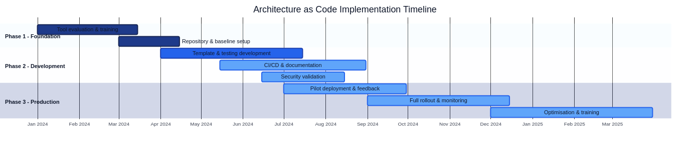

Automation, DevOps and CI/CD for Architecture as Code

Continuous integration and continuous deployment (CI/CD) combined with a mature DevOps culture form the backbone of modern software delivery. When Architecture as Code principles are applied, these processes become even more critical. This chapter explores how organisations can establish robust, secure, and effective CI/CD pipelines that transform infrastructure management from manual, error-prone activities into automated, reliable, and auditable operations while treating the entire system architecture as executable code.

The diagram above illustrates a typical timeline for an Architecture as Code implementation, from initial tool analysis through to a full production rollout.
Understanding CI/CD for Architecture as Code requires a fundamental mindset shift from traditional infrastructure management towards code-centric automation. Traditional methods rely on manual configuration, checklists, and ad-hoc solutions. Modern automation instead delivers consistency, repeatability, and transparency throughout the architecture lifecycle. Architecture as Code represents the next evolutionary step, where DevOps practices and CI/CD processes encapsulate the entire system architecture as a cohesive unit. The paradigm shift is not purely technical. It affects organisational structures, workflows, and legal obligations for companies that must navigate GDPR, data-management legislation, and sector-specific regulations.
The CI/CD flow depicted earlier runs from code commit through validation, testing, deployment, and monitoring. The flow represents a systematic method in which each stage is designed to surface defects early, assure quality, and minimise production risk. Organisations must include considerations around data residency, compliance validation, and cost optimisation.
Differentiating Architecture as Code and Infrastructure as Code in automation
Architecture as Code defines the opinionated standards, architectural policies, and lifecycle guardrails that automation must enforce, while Infrastructure as Code executes concrete resource changes in alignment with those guardrails. Seeing them as adjacent layers keeps responsibilities crisp: AaC codifies what must be true before runtime, IaC consumes those policies to produce compliant infrastructure. Thoughtworks frames Governance as Code as an architectural responsibility that encodes policy decisions directly into automation, ensuring teams adopt approved patterns without manual gatekeeping (Thoughtworks Technology Radar – Governance as Code). Higher-order IaC frameworks such as AWS Cloud Development Kit (CDK) demonstrate how architectural blueprints are compiled into deployable infrastructure, shrinking the translation gap between AaC intent and IaC implementation (AWS – Cloud Development Kit (CDK) Developer Guide).
AaC vs IaC automation responsibilities
Dimension Architecture as Code Infrastructure as Code Abstraction focus Codifies target-state patterns, governance controls, and compliance obligations before runtime execution Materialises the approved patterns as cloud, platform, and network resources Automation role Embeds policy checks, architectural validations, and opinionated workflows into CI/CD gates Applies resource changes, surfaces drift, and reports runtime telemetry back to architectural review loops Source of truth Maintains the authoritative architectural models, reference implementations, and reusable guardrails Inherits those models as templates, stacks, or modules that can be executed repeatedly Pipeline checkpoints Defines pre-deployment validation stages (design reviews, policy scans, segregation-of-duties checks) Executes deployment stages (plan, apply, smoke tests) and returns evidence to the architectural layer Evolution feedback Adjusts standards as organisational needs, regulations, and risk appetites evolve Provides operational insight (plan/apply results, monitoring) that informs AaC refinements
The division of responsibilities keeps automation pipelines coherent: AaC establishes the binding constraints and desired outcomes, and IaC tooling operationalises them without diluting governance signals. Teams that treat the two disciplines as complementary layers can scale delivery velocity whilst preserving compliance, auditability, and architectural consistency. Pipeline telemetry then flows upwards—IaC execution data is version controlled and fed back into AaC repositories—so architecture standards evolve with evidence rather than assumption.
The theoretical foundation for CI/CD automation
Continuous integration and continuous deployment are more than technical processes. They describe a philosophy for software development that prioritises rapid feedback, incremental improvement, and risk reduction through automation. When these principles are applied to Architecture as Code they open unique opportunities and challenges that demand deep understanding of both technical and organisational dimensions.
Historical context and evolution
The CI/CD concept has roots in Extreme Programming (XP) and the agile movement of the early 2000s. Its application to infrastructure expanded alongside the emergence of cloud technologies. Early infrastructure administrators relied on manual processes, configuration scripts, and the "infrastructure as pets" mindset—each server was unique and required individual care. That approach worked for small environments but could not scale to modern distributed systems containing hundreds or thousands of components.
The shift to "infrastructure as cattle"—treating servers as standardised, replaceable units—enabled systematic automation and set the stage for applying CI/CD principles. Container technology, cloud-provider APIs, and tools such as Terraform and Ansible accelerated this development by offering programmable interfaces for infrastructure management.
These advances coincided with increasingly strict regulatory requirements, particularly GDPR and guidelines from national data protection authorities. Automation is therefore not only an efficiency improvement but a necessity for compliance and risk management.
Fundamental principles for automating Architecture as Code
| Principle | Description | Benefits for Organisations |
|---|---|---|
| Immutability and version control | All configuration is version-controlled and every change is tracked through Git history | Reproducible architectures, stronger compliance documentation, ability to demonstrate controlled change to critical systems |
| Declarative configuration | Tools describe the desired end state instead of the steps required to reach it | Reduced complexity and errors, sophisticated dependency management, parallelisation of infrastructure operations |
| Testability and validation | Architecture as Code is testable through unit tests, integration tests, and full system validation | "Shift-left" testing, early defect discovery, lower remediation costs, reduced production incidents |
| Automation over documentation | CI/CD pipelines automate every step of infrastructure delivery | Consistency, reduced human error, automatic audit trails, elimination of outdated manual documentation |
Organisational implications of CI/CD automation
Implementing CI/CD for Architecture as Code affects the organisation on multiple levels. Technical teams must develop new competencies in programmatic infrastructure management, and business processes must be adapted to benefit from accelerated delivery capacity.
| Organisational Dimension | Challenge | Approach |
|---|---|---|
| Cultural transformation | Building trust in automation while maintaining compliance and security controls | Change management programmes, confidence building in automated systems, shared accountability emphasis |
| Skills development | Growing software engineering capabilities in traditional IT professionals | Training investments, cloud-provider API education, recruitment for development and operations skills mix |
| Compliance and governance | Ensuring automated processes meet regulatory obligations | Automated audit trails, data residency controls, programmatic separation of duties |
As discussed in Chapter 3 on version control, CI/CD pipelines are a natural extension of Git-based workflows for Architecture as Code. This chapter builds on those concepts and explores how organisations can implement advanced automation strategies that balance efficiency with stringent regulatory requirements. Later chapters will demonstrate how these principles apply to Containerisation and Orchestration as Code and integrate with the practices described in Security Fundamentals for Architecture as Code and Advanced Security Patterns.
From Architecture as Code to holistic development and operations
Architecture as Code extends DevOps practices beyond application delivery and into the management of entire architectures. The paradigm treats every architectural element as code:
- Application architecture: API contracts, service boundaries, and integration patterns
- Data architecture: Data models, data flows, and data-integrity rules
- Infrastructure architecture: Servers, networks, and cloud resources
- Security architecture: Security policies, access controls, and compliance rules
- Organisational architecture: Team structures, processes, and accountability models
This holistic approach requires DevOps practices that can manage the complexity of interconnected architectural components while sustaining delivery speed and quality.
Critical success factors for Architecture as Code DevOps
Cultural transformation with a holistic perspective: organisations must develop a shared understanding of architecture as a unified whole, enabling cross-disciplinary collaboration between developers, architects, operations, and business analysts.
Governance as Code: Architecture governance, design principles, and decisions are codified and version-controlled. Architecture Decision Records (ADR), design guidelines, and compliance requirements become part of the executable architecture.
Full traceability: Every change—from business requirement to deployed architecture—must be traceable across applications, data, infrastructure, and organisational processes.
Governance as Code integration
Governance as Code extends Infrastructure as Code principles to policies, approval flows, and organisational guardrails. When architecture governance is codified and version-controlled, teams gain transparency, traceability, and automation opportunities while meeting compliance and risk requirements.
Policy definitions, decisions, and exceptions are captured in machine-readable YAML or JSON formats consumed by validation tools in the CI/CD pipeline through policy engines like Open Policy Agent (OPA). The policy lifecycle follows standard code change-management flows: pull requests, technical review, automated testing, and traceable releases.
For comprehensive coverage of governance automation—including policy lifecycle management, federated operating models, exception handling, governance metrics, developer experience integration, and regulatory ecosystem alignment—see Chapter 11: Governance as Code.
Compliance integration: GDPR, security requirements, and sector-specific regulations are embedded in the architecture code rather than managed as external controls. For detailed coverage of regulatory automation and compliance frameworks, see Chapter 12: Compliance and Regulatory Adherence.
Collaborative architectural evolution: Transparent, democratic processes where all stakeholders contribute to the architecture codebase through inclusive workflows.
CI/CD fundamentals for regulated organisations
Organisations operating in regulated environments face complex requirements when implementing CI/CD pipelines for Architecture as Code. European data-protection law (including GDPR), directives from national supervisory authorities, and sector-specific regulations create a context where automation must balance efficiency with stringent compliance obligations.
Regulatory complexity and automation
The regulatory landscape influences CI/CD design fundamentally. GDPR’s requirements for "data protection by design and by default" mean that pipelines must include automated validation of data-protection implementations. Article 25 requires technical and organisational measures to ensure that only personal data necessary for specific purposes is processed. For Architecture as Code pipelines this translates into automated scanning for GDPR compliance, data-residency validation, and audit-trail generation.
Guidance from data-protection regulators on technical security measures demands systematic implementation of encryption, access controls, and logging. Manual processes are ineffective and error-prone when applied to modern dynamic infrastructure. CI/CD automation offers the opportunity to enforce these requirements consistently through policies as code and automated compliance validation.
National emergency and civil-protection agencies often issue regulations for socially critical operations that require robust incident management, continuity planning, and systematic risk assessment. Organisations in energy, transport, finance, and other critical sectors must incorporate specialised validations for operational resilience and disaster recovery capabilities into their CI/CD flows.
Economic considerations for regulated organisations
Cost optimisation in local currencies requires advanced monitoring and budget controls that traditional CI/CD patterns rarely provide. Regulated enterprises must manage currency exposure, regional price differences, and compliance costs that affect infrastructure investments.
Cloud-provider pricing varies significantly between regions. Organisations with data residency requirements are often restricted to EU regions, which can be more expensive than global options. Pipelines should therefore include cost estimation, budget-threshold validation, and automated resource optimisation aligned with the organisation’s economic realities.
Quarterly budgeting and industry accounting standards require detailed cost allocation and forecasting, which automated pipelines can deliver through integration with financial systems and finance-friendly reporting. This supports proactive cost management instead of reactive oversight.
GDPR-compliant pipeline design
GDPR compliance in Architecture as Code pipelines requires a holistic approach that integrates data-protection principles into every automation step. Article 25 mandates "data protection by design and by default", meaning that technical and organisational measures must be implemented from the earliest design stages of systems and processes.
Pipelines must therefore validate automatically that all architecture released complies with GDPR principles such as data minimisation, purpose limitation, and storage limitation. Personal data must never be hard-coded in architecture configuration, encryption must be enforced by default, and audit trails must be generated for every architecture change that could affect personal data.
Data discovery and classification: Automated scanning for personal data patterns in infrastructure code forms the first line of defence. CI/CD flows should implement sophisticated scanning able to identify both direct identifiers (such as national identity numbers) and indirect identifiers that can identify individuals when combined. Practical implementations need to avoid hard-coded, country-specific assumptions and instead lean on reusable pattern libraries that represent the broader European regulatory landscape. Typical data classes to capture include:
- Financial identifiers: International Bank Account Numbers (IBAN), Business Identifier Codes (BIC), and EU VAT numbers that are frequently embedded in configuration files for billing automation.
- Identity credentials: European passport numbers, national identity cards, eIDs, and biometric templates stored for authentication workflows.
- Logistics and trade identifiers: Economic Operators Registration and Identification (EORI) values, licence plate numbers, and shipment references that can become personal data in supply-chain scenarios.
Scanners should also ingest custom dictionaries that capture organisation-specific identifiers—such as membership numbers or student IDs—so that the pipeline provides consistent protection for every EU jurisdiction where the architecture is deployed.
Automated compliance validation: Policy engines such as Open Policy Agent (OPA) or cloud-provider-specific compliance tools can automatically verify that infrastructure configurations meet GDPR requirements. This includes checking encryption settings, access controls, data-retention policies, restrictions on cross-border data transfers, and verification that cloud regions remain within the approved EU footprint (for example eu-west-1, eu-central-1, or eu-south-1).
Audit-trail generation: Every pipeline execution must produce comprehensive audit logs documenting what was deployed, by whom, when, and why. These logs must themselves follow GDPR principles for personal-data handling and be stored securely in line with applicable legal retention requirements.
GDPR-compliant CI/CD pipeline example See code example 05_CODE_1 in Appendix A: Code Examples
This pipeline example demonstrates how regulated organisations can embed GDPR compliance directly into their CI/CD processes, including automatic scanning for personal data and validation of data residency.
CI/CD pipelines for Architecture as Code
Architecture as Code CI/CD pipelines differ from traditional pipelines because they handle multiple interconnected architectural domains simultaneously. Rather than focusing solely on application code or infrastructure, these pipelines validate and deploy entire architecture definitions encompassing applications, data, infrastructure, and policy as a cohesive whole.
Architecture as Code pipeline architecture
An Architecture as Code pipeline is organised into multiple parallel tracks that converge at critical decision points:
- Application architecture track: validates API contracts, service dependencies, and application compatibility.
- Data architecture track: checks data-model changes, data-lineage compatibility, and data integrity.
- Infrastructure architecture track: manages infrastructure changes with an emphasis on supporting application and data needs.
- Security architecture track: enforces security policies across all architecture domains.
- Governance track: validates compliance with architectural principles and regulatory requirements.
# .github/workflows/architecture-as-code-pipeline.yml
# Comprehensive Architecture as Code pipeline for organisations
name: Architecture as Code CI/CD
on:
push:
branches: [main, develop, staging]
paths:
- 'architecture/**'
- 'applications/**'
- 'data/**'
- 'infrastructure/**'
- 'policies/**'
pull_request:
branches: [main, develop, staging]
env:
ORGANISATION_NAME: 'example-org'
AWS_DEFAULT_REGION: 'eu-west-1'
GDPR_COMPLIANCE: 'enabled'
DATA_RESIDENCY: 'EU'
ARCHITECTURE_VERSION: '2.0'
COST_CURRENCY: 'EUR'
AUDIT_RETENTION_YEARS: '7'
jobs:
# Phase 1: Architecture validation
architecture-validation:
name: '🏗️ Architecture validation'
runs-on: ubuntu-latest
strategy:
matrix:
domain: [application, data, infrastructure, security, governance]
steps:
- name: Check out architecture repository
uses: actions/checkout@v4
with:
fetch-depth: 0
- name: Configure architecture tooling
run: |
# Install architecture validation tools
npm install -g @asyncapi/cli @swagger-api/swagger-validator
pip install architectural-lint yamllint
curl -L https://github.com/open-policy-agent/conftest/releases/download/v0.46.0/conftest_0.46.0_Linux_x86_64.tar.gz | tar xz
sudo mv conftest /usr/local/bin
- name: Architecture compliance check
run: |
echo "🔍 Validating ${{ matrix.domain }} architecture..."
case "${{ matrix.domain }}" in
"application")
# Validate API contracts and service dependencies
find architecture/applications -name "*.openapi.yml" -exec swagger-validator {} \;
find architecture/applications -name "*.asyncapi.yml" -exec asyncapi validate {} \;
# Check for GDPR-compliant service design
conftest verify --policy policies/gdpr-service-policies.rego architecture/applications/
;;
"data")
# Validate data models and lineage
python scripts/validate-data-architecture.py
# Check data-privacy compliance
conftest verify --policy policies/data-privacy-policies.rego architecture/data/
;;
"infrastructure")
# Infrastructure validation within the broader architecture context
terraform -chdir=architecture/infrastructure init -backend=false
terraform -chdir=architecture/infrastructure validate
# Ensure infrastructure supports application and data requirements
python scripts/validate-infrastructure-alignment.py
;;
"security")
# Cross-domain security validation
conftest verify --policy policies/security-policies.rego architecture/
# GDPR impact assessment
python scripts/gdpr-impact-assessment.py
;;
"governance")
# Validate Architecture Decision Records
find architecture/decisions -name "*.md" -exec architectural-lint {} \;
# compliance requirements
conftest verify --policy policies/governance-policies.rego architecture/
;;
esac
# Phase 2: Integration testing
architecture-integration:
name: '🔗 Architecture integration testing'
needs: architecture-validation
runs-on: ubuntu-latest
steps:
- name: Check out code
uses: actions/checkout@v4
- name: Architecture dependency analysis
run: |
echo "🔗 Analysing architecture dependencies..."
# Check cross-domain dependencies
python scripts/architecture-dependency-analyser.py \
--input architecture/ \
--output reports/dependency-analysis.json \
--format json
# Validate the absence of circular dependencies
if python scripts/check-circular-dependencies.py reports/dependency-analysis.json; then
echo "✅ No circular dependencies found"
else
echo "❌ Circular dependencies detected"
exit 1
fi
- name: Full architecture simulation
run: |
echo "🎭 Running complete architecture simulation..."
# Simulate systems with all architectural components
docker-compose -f test/architecture-simulation/docker-compose.yml up -d
# Wait for system stabilisation
sleep 60
# Run architectural integration tests
python test/integration/test-architectural-flows.py \
--config test/architecture-config.yml \
--compliance-mode gdpr
# Clean up simulation environment
docker-compose -f test/architecture-simulation/docker-compose.yml down
# Additional phases continue with deployment, monitoring, documentation, and audit...
Pipeline design principles
Effective CI/CD pipelines for Architecture as Code are built on design principles that optimise speed, safety, and observability. These principles must be tailored to organisations’ unique compliance, cost-optimisation, and reporting requirements.
Fail-fast feedback and progressive validation
Fail-fast feedback is the cornerstone of CI/CD. Errors are detected and reported as early as possible in the development lifecycle. For Architecture as Code this means multilayer validation—from syntax checks to comprehensive security scanning—before any infrastructure reaches production.
| Validation Layer | Purpose | Tools & Technologies | Detection Capabilities |
|---|---|---|---|
| Syntax and static analysis | Check for syntax errors, undefined variables, and configuration mistakes | terraform validate, ansible-lint, provider-specific validators |
Syntax errors, type mismatches, undefined references before deployment |
| Security and compliance scanning | Analyse for security misconfigurations and compliance violations | Checkov, tfsec, Terrascan | GDPR violations, unencrypted resources, data-residency issues, security misconfigurations |
| Cost estimation and budget validation | Estimate financial impact of infrastructure changes | Infracost, cloud provider cost calculators | Cost overruns, budget violations, resource inefficiencies before provisioning |
| Policy validation | Automated checks against organisational policies | Open Policy Agent (OPA), cloud-native policy engines | Naming violations, architectural standard deviations, configuration policy breaches |
Progressive deployment strategies
Progressive deployment minimises risk through gradual rollout of infrastructure changes. This is particularly important for organisations with high availability requirements and regulatory obligations.
| Deployment Strategy | Description | Use Cases | Risk Mitigation |
|---|---|---|---|
| Environment promotion | Changes flow through environments (development → staging → production) with increasing validation rigour | Standard deployment path for most changes | Progressive validation, manual approval gates, increasing test coverage at each stage |
| Blue-green deployments | Build parallel environment fully tested before traffic switches to new version | Critical components, high-availability systems, database migrations | Zero-downtime deployments, instant rollback capability, full environment validation |
| Canary releases | Gradual rollout to subset of resources or users before full deployment | User-facing services, performance-sensitive changes | Real-world validation, limited blast radius, monitored impact assessment |
Automated recovery and disaster readiness
Robust recovery capabilities are essential to maintain system reliability and meet continuity requirements.
State management: Infrastructure state must be managed in a way that enables reliable rollbacks to previously known working configurations. This includes automated backups of Terraform state files and database snapshots.
Health monitoring: Automated health checks after deployment can trigger rollbacks if system degradation is detected. Metrics include both technical indicators (response times, error rates) and business measures (transaction volumes, user engagement).
Documentation and communication: Recovery procedures must be well documented and readily available to incident-response teams. Automated notification systems should inform stakeholders about infrastructure changes and restoration events.
Maintainability safeguards in CI/CD
Maintaining Architecture as Code assets demands continuous assurance that automation remains trustworthy. Pipelines therefore need codified quality gates, disciplined environment promotion, and observability patterns that expose maintainability regressions before they accumulate.
Automated test categories embedded in workflows
Architecture repositories require three complementary automated test categories that are executed at different pipeline stages to keep IaC changes predictable and maintainable:
| Test category | Purpose | Typical tooling | CI/CD integration |
|---|---|---|---|
| Unit tests | Assert module-level logic such as CDK constructs, policy libraries, or Terraform modules before plans are generated. | AWS CDK assertions, Terratest module mocks, Pulumi unit harnesses | Run on every pull request to protect shared building blocks; failures block merges until maintainers update fixtures or adjust standards (Source [9]). |
| Integration tests | Exercise composed stacks in ephemeral environments to confirm that service contracts, data pipelines, and networking policies still interoperate. | Terratest end-to-end suites, LocalStack or Testcontainers environments | Executed after unit checks succeed so that promotion candidates prove real-world interoperability before changes leave the staging branch. |
| Compliance and resilience tests | Continuously validate regulatory controls, platform guardrails, and rollback rehearsals across environments. | Open Policy Agent rules, terraform-compliance scenarios, resilience simulations documented in Chapter 13 | Wired into nightly or environment-promotion jobs to surface deviations such as failing rollback scripts or missing encryption defaults. |
Chapter 13 expands on how those categories are authored and maintained, but Chapter 05 makes their execution non-negotiable: every pipeline stage publishes artefacts (logs, policy reports, CDK assertion results) into shared storage so that architectural stewards can trace regressions and demonstrate audit readiness (Source [8]).
Environment promotion policies that preserve architectural parity
Promotion through development, integration, pre-production, and production environments should be deterministic. Multi-stage release definitions codify the required checks, approvals, and evidence collection so that each environment mirrors the architectural baseline defined in Git.
- Template-driven parity: Promotion workflows rehydrate infrastructure using the same Terraform modules or CDK stacks, refusing manual hotfixes that would create drift. Deployment manifests include hash comparisons of rendered templates, and any difference outside approved parameters fails the promotion.
- Policy-controlled approvals: Promotion rules embed policy-as-code checks (for example, Conftest bundles for GDPR) and insist that compliance suites and resilience drills complete before sign-off. Azure DevOps, GitLab, and GitHub environment protections allow these checks and approvals to be codified, ensuring architectural stewards have documented sign-off before production releases (Source [12]).
- Evidence bundles: Each promotion attaches the change set, policy reports, and integration-test telemetry so that reviewers can confirm architectural parity without reconstructing the run from scratch. These bundles are archived to satisfy internal audit requirements and support retrospectives when defects slip through.
This disciplined promotion ladder keeps regional deployments synchronised. When a new EU region is activated the automation replays the same promotion workflow, guaranteeing that data-classification controls, tagging baselines, and architectural diagrams remain consistent with existing locations.
Maintainability telemetry and dashboards
Maintainability suffers when teams cannot see failure trends or compliance fatigue. Pipelines therefore stream telemetry into shared observability stacks so that platform engineers, architects, and compliance officers share a single view of system health.
| Signal | Calculation | Dashboard usage |
|---|---|---|
| Pipeline stability index | Rolling proportion of successful runs per environment, weighted to highlight flaky stages. | Highlights brittle integration suites or unreliable infrastructure mocks before they erode confidence. |
| Mean time to recovery for IaC rollbacks (MTTR-IaC) | Average time between a failed deployment and the successful rollback or hotfix release. | SRE dashboards compare MTTR across teams to target investment in automation where recovery lags (Source [8]). |
| Policy breach density | Number of failing policy checks divided by total runs in each environment. | Compliance teams trend breach density to spot policy packs that need refactoring or training gaps ahead of audits (Source [12]). |
| Architecture drift diff count | Count of manual overrides detected by drift-detection jobs or GitOps reconcilers. | Signals where environment parity is threatened so promotion policies can be tightened or automation extended. |
Dashboards combine these signals with DORA-inspired throughput metrics so that teams can correlate deployment velocity with maintainability. Publishing the telemetry alongside promotion evidence enables quick root-cause analysis when defects or regulatory findings arise.
Automated testing strategies
Multi-level testing strategies for Architecture as Code comprise syntax validation, unit testing of modules, integration testing of components, and system testing of complete environments. Each test layer addresses specific risks and quality attributes at increasing complexity and execution cost.
Static analysis tools such as tflint, Checkov, or Terrascan identify security risks, policy violations, and deviations from best practice. Dynamic testing in sandbox environments validates functionality and performance under realistic conditions.
Terratest for organisations
Terratest provides a mature solution for automated testing of Terraform code through Go-based test suites that validate infrastructure behaviour. For organisations, Terratest should focus on GDPR compliance testing and cost validation.
For a full Terratest implementation that validates VPC configurations with GDPR compliance, see 05_CODE_3: Terratest for VPC implementation in Appendix A.
Container-based testing with compliance
Container-based infrastructure testing using Docker and Kubernetes enables production-like conditions while maintaining isolation and reproducibility:
# test/Dockerfile.compliance-test
# Container for Architecture as Code compliance testing
FROM ubuntu:22.04
LABEL maintainer="it-team@organisation.example"
LABEL description="Compliance-testing container for Architecture as Code implementations"
# Install essential tools
RUN apt-get update && apt-get install -y \
curl \
wget \
unzip \
jq \
git \
python3 \
python3-pip \
awscli \
&& rm -rf /var/lib/apt/lists/*
# Install Terraform
ENV TERRAFORM_VERSION=1.6.0
RUN wget https://releases.hashicorp.com/terraform/${TERRAFORM_VERSION}/terraform_${TERRAFORM_VERSION}_linux_amd64.zip \
&& unzip terraform_${TERRAFORM_VERSION}_linux_amd64.zip \
&& mv terraform /usr/local/bin/ \
&& rm terraform_${TERRAFORM_VERSION}_linux_amd64.zip
# Install compliance tools
RUN pip3 install \
checkov \
terrascan \
boto3 \
pytest \
requests
# Install OPA/Conftest for policy testing
RUN curl -L https://github.com/open-policy-agent/conftest/releases/download/v0.46.0/conftest_0.46.0_Linux_x86_64.tar.gz | tar xz \
&& mv conftest /usr/local/bin/
# Install Infracost for cost control
RUN curl -fsSL https://raw.githubusercontent.com/infracost/infracost/master/scripts/install.sh | sh \
&& mv /root/.local/bin/infracost /usr/local/bin/
# Copy compliance test scripts
COPY test-scripts/ /opt/compliance/
# Configure locale
RUN apt-get update && apt-get install -y locales \
&& locale-gen en_US.UTF-8 \
&& rm -rf /var/lib/apt/lists/*
ENV LANG=en_US.UTF-8
ENV LANGUAGE=en_US:en
ENV LC_ALL=en_US.UTF-8
# Create test workspace
WORKDIR /workspace
# Entry point for compliance testing
ENTRYPOINT ["/opt/compliance/run-compliance-tests.sh"]
Architecture as Code testing strategies
Architecture as Code requires testing strategies that extend beyond traditional infrastructure or application testing. Validation must ensure architectural consistency across domains, confirm that changes in one component do not break another, and verify that the overall architecture meets defined quality attributes.
Holistic architecture testing
Architecture as Code testing is organised into multiple levels:
- Architecture unit tests: validate individual architectural components (services, data models, infrastructure modules).
- Architecture integration tests: evaluate interactions across domains (application–data integration, infrastructure–application alignment).
- Architecture system tests: verify end-to-end architectural quality and performance.
- Architecture acceptance tests: confirm that the architecture meets business and compliance requirements.
Cost optimisation integration
CI/CD pipelines can integrate with cost estimation tools like Infracost to provide visibility into infrastructure spending before deployment. Cost thresholds can trigger approval gates, and automated alerts can notify teams of budget overruns.
For comprehensive coverage of cost optimisation, FinOps practices, predictive cost modelling, and budget control strategies, see Chapter 15: Cost Optimisation and Resource Management.
Monitoring and observability
Pipeline observability encompasses both execution metrics and business-impact measurements. Technical metrics such as build time, success rate, and deployment frequency are combined with business indicators such as system availability and performance.
Alerting strategies ensure rapid response to pipeline failures and infrastructure anomalies. Integration with incident-management systems enables automatic escalation and notification of relevant teams based on severity and impact.
Monitoring and Alerting
For organisations, monitoring requires special attention to GDPR compliance, cost tracking in EUR, and alignment with local incident-management processes:
# monitoring/pipeline-monitoring.yaml
# Comprehensive monitoring for Architecture as Code pipelines
apiVersion: v1
kind: ConfigMap
metadata:
name: pipeline-monitoring
namespace: monitoring
labels:
app: pipeline-monitoring
organisation: ${ORGANISATION_NAME}
gdpr-compliant: "true"
data:
prometheus.yml: |
global:
scrape_interval: 15s
evaluation_interval: 15s
external_labels:
organisation: "${ORGANISATION_NAME}"
region: "eu-west-1"
country: "EU"
gdpr_zone: "compliant"
rule_files:
- "pipeline_rules.yml"
- "gdpr_compliance_rules.yml"
- "cost_monitoring_rules.yml"
scrape_configs:
# GitHub Actions metrics
- job_name: 'github-actions'
static_configs:
- targets: ['github-exporter:8080']
scrape_interval: 30s
metrics_path: /metrics
params:
organisations: ['${ORGANISATION_NAME}']
repos: ['infrastructure', 'applications']
# Jenkins metrics for pipelines
- job_name: 'jenkins'
static_configs:
- targets: ['jenkins:8080']
metrics_path: /prometheus
params:
match[]:
- 'jenkins_builds_duration_milliseconds_summary{job=~".*"}'
- 'jenkins_builds_success_build_count{job=~".*"}'
- 'jenkins_builds_failed_build_count{job=~".*"}'
DevOps culture for Architecture as Code
Architecture as Code requires a mature DevOps culture capable of managing holistic system thinking while sustaining agility and innovation. For organisations this means adapting DevOps principles to national values of consensus, transparency, and responsible risk management.
Architecture as Code cultural practices
- Transparent architecture governance: all architecture decisions are documented and shared openly across the organisation.
- Consensus-driven architectural evolution: architecture changes move through democratic decision processes that involve all stakeholders.
- Risk-aware innovation: innovation is balanced with disciplined risk management aligned with organisational risk appetite.
- Continuous architectural learning: ongoing competence development across the entire architectural landscape.
- Collaborative cross-domain teams: cross-functional teams own the full architecture stack from applications to infrastructure.
Summary
Architecture as Code represents the future of infrastructure management for organisations. Automation, DevOps, and CI/CD pipelines tailored for Architecture as Code form a critical component for organisations striving for digital excellence and regulatory compliance. By implementing robust, automated pipelines, teams accelerate architectural delivery while maintaining high standards for security, quality, and compliance.
Architecture as Code is the next evolutionary step where DevOps culture and CI/CD processes cover the entire system architecture as a cohesive unit. This holistic approach requires sophisticated pipelines that orchestrate applications, data, infrastructure, and policies as an integrated whole while satisfying compliance requirements.
organisations face specific demands that influence pipeline design, including GDPR validation, data-residency enforcement, cost optimisation , and integration with local business processes. Meeting these demands requires specialised pipeline stages for automated compliance checking, cost-threshold validation, and comprehensive audit logging that satisfies national legislation.
Modern CI/CD approaches such as GitOps, progressive delivery, and infrastructure testing enable deployment strategies that minimise risk while maximising velocity. For organisations this includes blue-green deployments for production systems, canary releases for gradual rollouts, and automated rollback capabilities for rapid recovery.
Testing strategies for Architecture as Code span multiple levels from syntax validation to comprehensive integration testing. Terratest and container-based frameworks enable automated validation of GDPR compliance, cost thresholds, and security requirements as part of the deployment pipeline.
Monitoring and observability for Architecture as Code pipelines require comprehensive metrics that capture both technical performance and business compliance indicators. Automated alerting ensures rapid responses to compliance breaches, cost overruns, and technical failures through integration with incident-management processes.
Investing in sophisticated CI/CD pipelines for Architecture as Code pays dividends through reduced deployment risk, improved compliance posture, faster feedback cycles, and enhanced operational reliability. These capabilities become even more critical as organisations adopt cloud-native architectures and multi-cloud strategies.
Successful implementation of CI/CD for Architecture as Code requires balancing automation with human oversight, particularly for production deployments and compliance-critical changes. organisations that invest in mature pipeline automation and comprehensive testing strategies gain significant competitive advantages through improved reliability and accelerated innovation.
References
- Jenkins. "Architecture as Code with Jenkins." Jenkins Documentation.
- GitHub Actions. "CI/CD for Architecture as Code." GitHub Documentation.
- Azure DevOps. "Architecture as Code Pipelines." Microsoft Azure Documentation.
- GitLab. "GitOps and Architecture as Code." GitLab Documentation.
- Terraform. "Automated Testing for Terraform." HashiCorp Learn Platform.
- Kubernetes. "GitOps Principles and Practices." Cloud Native Computing Foundation.
- GDPR.eu. "Infrastructure Compliance Requirements." GDPR Guidelines.
- Data Protection Authorities. "Technical and Organisational Measures." GDPR Guidance.
- ThoughtWorks. "Architecture as Code: The Next Evolution." Technology Radar, 2024.
- DevOps Institute. "Architecture-Driven DevOps Practices." DevOps Research and Assessment.
- Data Protection Authorities. "GDPR for organisations." Guidance on personal-data processing.